|
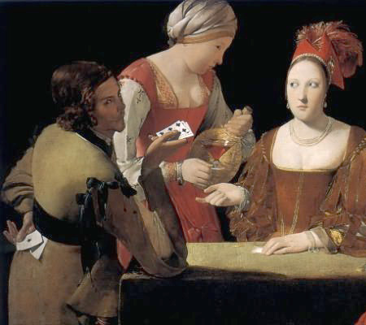 Card CheatsTraditional parlor games like Five Card Stud, Texas Hold 'Em, Blackjack and Baccarat might have been a lot more fun a few hundred years ago, without all those swiveling casino cameras trained on your every tweak and twitch. The history of card cheating as pop-cultural indulgence was first illustrated in oil paintings by Georges de La Tour and Michelangelo Merisis da Caravaggio, who in the early 1400s and 1500s brought their visions of courtly play into public view. Opting not to airbrush away Norman Rockwellian visuals of individual treachery and conspiracy among thieves, these paintings are content to wink directly at the viewer, inviting him or her to cast aside suspicion and celebrate a shared deceit. Card cheating as a viable career choice was first openly propositioned in 1902 by S. W. Erdnase, in his damning anonymous treatise, Artifice, Ruse and Subterfuge, also known as The Expert at the Card Table. Erdnase's publication revealed for the first time in print nearly every cheating strategy imaginable, most of which are still being referenced by today's top hustlers and teenage magicians. 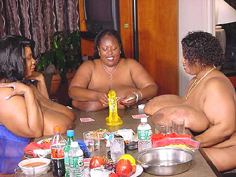Erdnase, whose real identity has adequately eluded historians, offered his book to the public with no excuse for its existence: "To all lovers of card games it should prove interesting, and as a basis of card entertainment it is practically inexhaustible. It will not make the innocent vicious, or transform the the pastime player into a professional; or make the fool wise, or curtail the annual crop of suckers -- but whatever the result may be, if it sells, it will accomplish the primary motive of its author, as he needs the money." It is cautiously recommended to patrons of the Rotten Library that these techniques be exerted only upon despised family members (or friends of friends) in private home games where quick getaways are a conceivable possibility. Wholesale magic dealers manufacture holdout devices: retractable mechanical arms capable of thrusting up to fifteen cards directly into the palm of your hand when they're needed most. Holdouts are strapped to the forearm with elastic belts, enabling free movement of the elbow when the wearer is sitting or standing. This rig can easily facilitate the production or exchange of cards by applying tension and release: making a strong fist is often enough to trigger the prop. Cards are bent 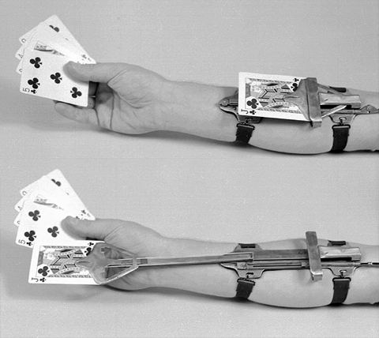slightly during the delivery process, making them easy to conceal and grip between your fingers and integrate into your existing array. Taking advice from the Erdnase book into the twentieth century, a simplified device called the "reverse holdout" has become the premiere cheating strategy of choice during SAT exams at high schools across the nation. Imagine you're in class taking a test, clutching a cheat sheet in your hand. You've printed your notes on sturdy cardboard, and anchored one end of it (through a punched-out hole, or otherwise) to a rubber band conveniently safety-pinned all the way up inside of your shirt sleeve or sweater vest. When the teacher walks by, simply release the card from your grip, and the elastic will "zip" the card up your sleeve, immediately away from curious eyeballs. Naturally you will have to reach your hand up your sleeve to retrieve the cheat sheet, but that can only be described as a small price to pay for the spontaneous ability to show a teacher your hands and balls are empty and clean on all sides. This cheating strategy works best when used in conjunction with a long-sleeved, white-collared shirt with unbuttoned cuffs. It takes a little practice: the last thing you want is a cheat sheet snagging on your wrist watch, or a rubber band / safety pin combo snapping off and shooting across the room into someone's face. 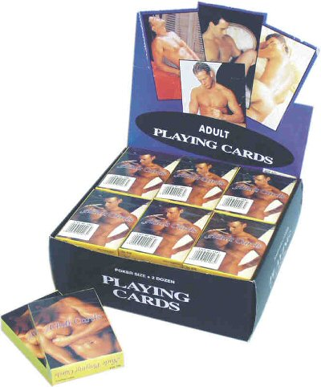Marked cards, sometimes referred to as "counterfeit" cards, mimick the styles and colors of popular, respectable brands. Poor quality inks and card stock can warrant immediate detection, leading to significantly embarrassing gun play during game play. Some false cards have spots of missing print, others have blotches of ink on the face cards. Jacks, Queens, and Kings are the most difficult to forge due to their exacting, complicated design and four-color template. In earlier times, even an expensive deck of marked cards might look a little faded, since printing companies fiercely guarded their nineteenth-century breakthroughs in spray-mount coating, slicking, and matting. One of counterfeiters'
earliest targets was a mimick of the Bee bridge-size deck manufactured
by the U.S. Playing Card Company of Cincinnati, Ohio. Fake Bee decks
are still being manufactured: they're factory-marked for suit and value,
and etched into the uppermost (and lowermost) lattice work on the back
of each card are tiny, coded indicators revealing the hand. 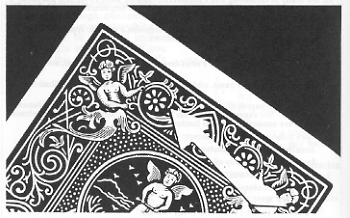Another commonly forged deck is of course the world-renowned Bicycle pack, a brand that's been in continuous production since 1885. Today, any traditional magic shop carries factory-marked and sealed Bicycle decks employing subtle shade work on the back side. Shading involves reducing, obscuring or thickening portions of a complex design to embed data about a card's suit and value. One errant thin petal in a wheel of otherwise plump flowers in the card shown to the left, for instance, is the signature mark of a shading system. This technique is called block out work, and it's so widely known that many poker players in private games regularly scan Bicycle decks for tell-tale markings before a round even begins. A backwards rifle is the easiest way to spot a marked deck: the cheat marks dance along the flowers in the card design like a flip-book animation. 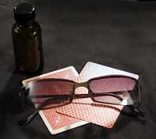If the marking mechanism is sufficiently advanced enough to pass a rifle test, the cheating system might actually be invisible to the naked eye. The markings on luminous shade cards are applied with a quick brush of liquid solution impervious to standard UV light. The marks can only be observed through a special filter, ostensibly affixed to the inner lens of a cheater's sunglasses. Such a device would effectively make you capable of seeing through cards, walls, and ladies' underpants like Neo in The Matrix. Card cheats have formulated age-old and inexhaustible strategies for dynamically marking cards in active play -- cards they didn't have time to prepare in advance. The easiest and cleanest method involves arranging cards in a one-way deck: a pack of cards with an asymmetric back design or retarded photograph, i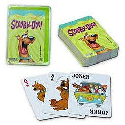n which cards of higher value are turned upside down. While individual cards often get inverted during play, they won't be disturbed by traditional rifle shuffles or one-handed cuts. By monitoring the orientation of cards which slide from the dealer's hand to players or the central playing area, cheaters have a better chance of knowing where the Aces are at key points during the game. The next baby step up is nicking, so named because during play, the cheater quietly slices a portion of the card open with a freshly-sharpened thumbnail. Nail marking requires that the cheater not bite his nails for several weeks: the natural enamels must grow strong enough to perforate the edges of slick, coated card stock quickly and cleanly. As a nicker at the table goes through hand after hand, more and more cards can be marked in easily discernable ways. A nick along the top versus a nick along the side, for instance. Two nicks next to one another. A nick on the corner. Advanced nicking involves localizing the card marks: performing the same nick twice so the nick is visible whether or not the card is right side up. Anything which makes its way into your fingers can be nicked -- and equally helpful is nicking the shitty cards, which can help telegraph well in advance when your opponent is bluffing. 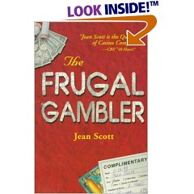If you're feeling only slightly bolder than a nicker, try the time-honored technique of daubing: the act of deliberately smudging the back or sides of a card in a particular place with a particular substance. At 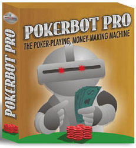a poker table, the two easiest sources of daubing dirt is black ink (transferred from a nearby newspaper to your moistened thumb) or cigarette soot from a dirty ash tray. If a fellow player observes you dipping your fingers into the ashes, insist you were extinguishing a smoldering ember. Black coffee and beverages with Kahlua or fruit juice are equally viable substitutes. Subtlety is the overarching rule: don't smear your chosen card up with blackface like Ted Danson at a Friars Club roast. Nor should you apply a substance too tacky, lest cards be observed sticking together in such a way that a deck you've been daubing gets discarded in favor of one less "problematic". Stains on card edges can last through several games, provided nobody gets wise. Magician's "daub," a semi-hard paste which marks cards in play, is available for pennies on the dollar, and it's suitable for applying to back designs of any color or complexity.
Possibly you'd prefer to crimp your ride. Crimping is the act of warping, twisting, bending, creasing, or otherwise dog-earing a selected card, and it serves a far greater purpose than secret identification. When the corner of a playing card has been bent, its position anywhere in the pack is easily spotted. Valued cards in the deck are effectively "bumped" by an arced fraction of a degree, casting a slight but slanted shadow onto the lower hemisphere of the pack. By eyeballing the thickness of pack hemispheres and estimating the number of cards above or below a crimp, one can more confidently predict the next occurrence of a winning hand. Please remember that crimping is not a full, snapping fold -- you're only warping it a half inch. Don't curl it up like a quesadilla. 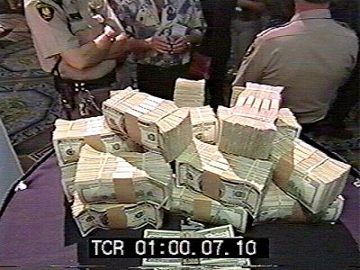Card counting is an activity about as much fun as it sounds: a mathematical averaging system inside your own head, where points called "weights" are mentally assigned to the value of every card in play. Counting is by and large the only statistically-proven method of gaining some level of advantage over the casino -- but casinos have thwarted most counting techniques by mandating that six to eight decks be shuffled together prior to even the simplest games of Blackjack. Over one hundred different card counting systems have been published as of this writing in 2006. Despite casinos' best efforts to demonize the process, card counting is not illegal and therefore cannot be considered much of a cheat. Nevada courts ruled long ago that "players are free to use any information made available to them," short of conspiracy or collusion with casino personnel, or using an electronic card counter. The house reserves the right to refuse service at any time, however -- and players are regularly asked to leave, or perm-banned, or arrested for trespassing. 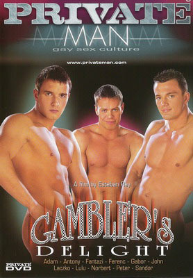As a suspected card counter, you might be back roomed -- an outdated intimidation process in which casino security taps you on the shoulder and asks you to please follow them. Flanked by sour-faced guards, you're marched across the main lobby and through a door marked AUTHORIZED PERSONNEL ONLY. You get a lecture and your picture taken. They escort you into a long hallway, down a poorly lit staircase, and through one final door which claims ALARMS WILL SOUND if opened. Then you're pushed out that door, into the bright sunshine and/or a mud puddle. One
hundred years after the initial publication of Erdnase's groundbreaking framework
for career card cheating, the popularity of Poker is again surging across the
Western hemisphere. This time around, it's popular with the NASCAR crowd, celebrities
"showing down" on Bravo, Chinese math students looking to oust cigar-chompin'
frat boys, and overweight, online shut-ins with severe reality problems. | ||||||||||||||||||||||||||||||||||||||||